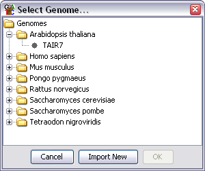
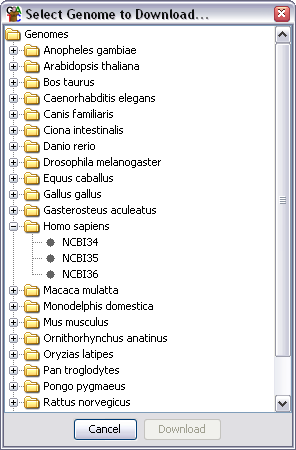

The first step in creating a new project is selecting a genome. To get started select File > New Project.
You will initially be presented with a list of all of the genomes you currently have installed on your system.

If you can see the genome you want you can simply select it and press OK. If it is not present then you can import it from the SeqMonk genome server.
There are a large collection of genomes available on the SeqMonk genome server. To import one of these onto your machine press the "Import New" button on the genome selector. A second selector should open up displaying the genomes available on the server.

To import the genome simply select it and press download. The genome will be installed onto your system. You will then need to reselect File >> New Project to start creating your project using your newly imported genome.
Once you have selected your genome and it has loaded you can move on to Importing your Data.